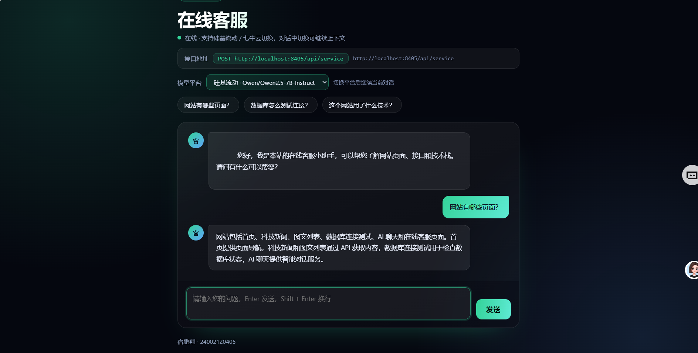
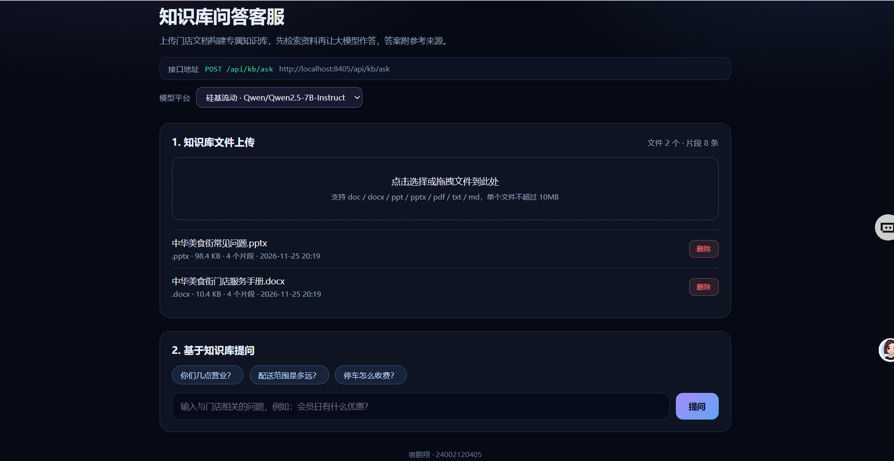
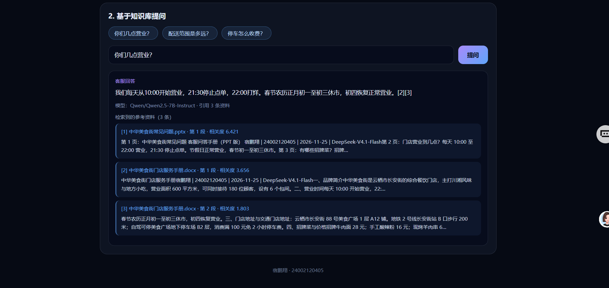
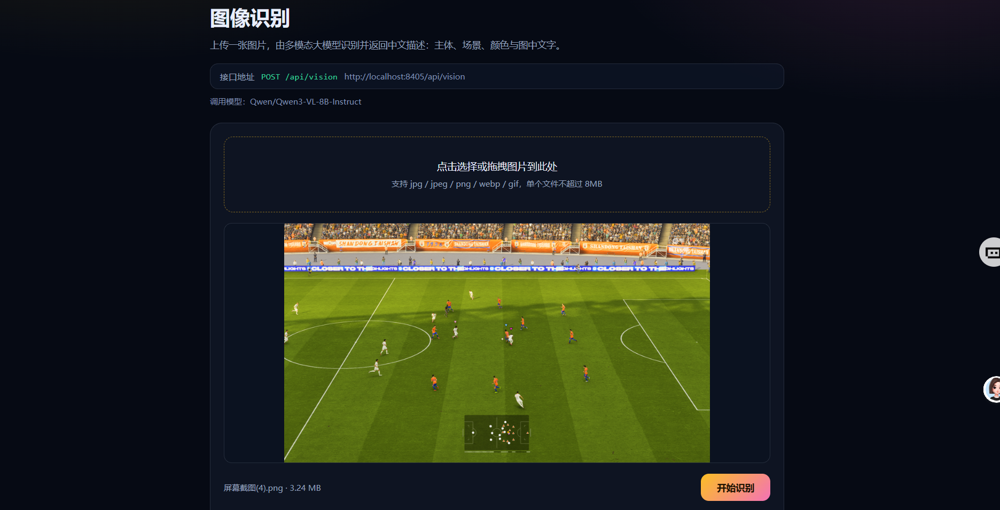
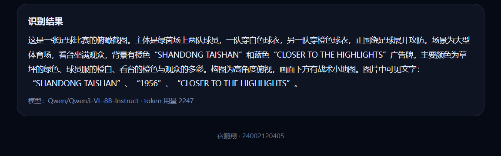
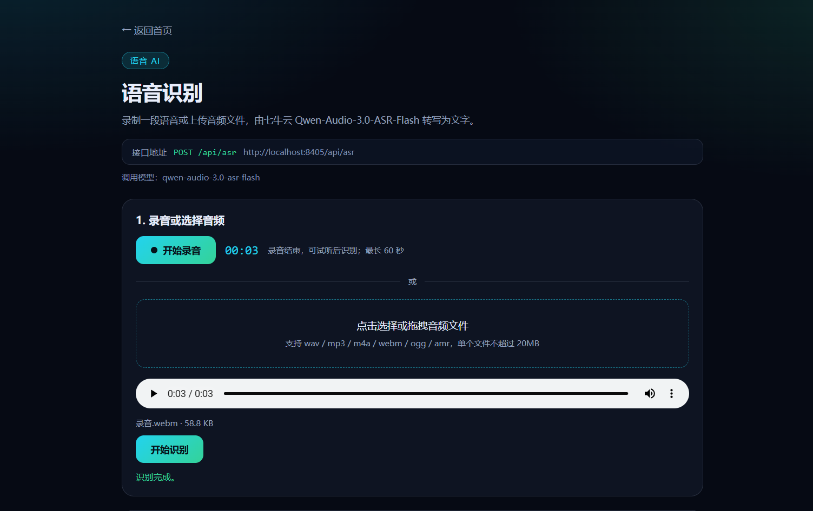
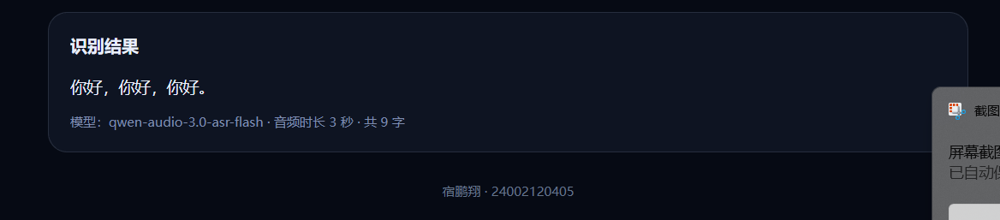

LLM 实践测试展示
基于本站后端接口完成四项大模型能力实测：在线客服多轮对话、知识库问答（RAG）、图片识别（多模态 VL）、语音识别（ASR）。 本页汇总每项测试的调用接口、模型平台、实测结果与过程截图，所有结果均为真实接口返回。
4
能力测试项
3
调用大模型
2
模型平台
7
实测截图
POST /api/service
硅基流动 · Qwen/Qwen2.5-7B-Instruct
支持切换七牛云
客服助手可回答本站页面、接口与技术栈相关问题。页面支持硅基流动 / 七牛云两个平台切换，对话中切换平台仍可延续当前上下文。
实测结果
- 点击快捷问题「网站有哪些页面？」，客服准确列出首页、科技新闻、图文列表、数据库连接测试、AI 聊天与在线客服共 6 个页面，并逐一说明职责。
- 快捷问题还支持「数据库怎么测试连接？」「这个网站用了什么技术？」，覆盖站点常见咨询。
- 多轮对话上下文连续，平台切换后对话不中断。

POST /api/kb/ask
硅基流动 · Qwen/Qwen2.5-7B-Instruct
先检索 · 后作答 · 附来源
上传门店文档构建专属知识库：系统先将文档切片，提问时检索相关片段，再交给大模型生成答案，并在答案后标注引用来源。 支持 doc / docx / ppt / pptx / pdf / txt / md，单文件不超过 10MB。
实测结果
- 知识库构建：上传《中华美食街常见问题.pptx》（4 个片段）与《中华美食街门店服务手册.docx》（4 个片段），共
2 个文件 · 8 条片段。 - 提问「你们几点营业？」，回答准确：每天 10:00 开始营业，21:30 停止点单，22:00 打烊；春节正月初一至初三休市，初四恢复营业，答案标注引用
[2][3]。 - 同步返回检索到的 3 条参考资料及相似度（6.421 / 3.656 / 1.803），答案可追溯、可核验。


POST /api/vision
Qwen/Qwen3-VL-8B-Instruct
token 用量 2247
上传一张图片（支持 jpg / jpeg / png / webp / gif，单文件不超过 8MB），由多模态大模型识别并返回中文描述：主体、场景、颜色与图中文字。 本次上传足球比赛俯瞰截图（屏幕截图(4).png · 3.24 MB），点击「开始识别」。
实测结果
- 场景理解准确：识别出绿茵场上两队球员（白色球衣 / 橙色球衣）围绕足球攻防，大型体育场看台坐满观众。
- 细节到位：提及橙色「SHANDONG TAISHAN」与蓝色「CLOSER TO THE HIGHLIGHTS」广告牌、高角度俯视构图与画面下方的战术小地图。
- 图中文字（OCR）识别正确：
SHANDONG TAISHAN、1956、CLOSER TO THE HIGHLIGHTS。


POST /api/asr
七牛云 · qwen-audio-3.0-asr-flash
页面可直接录音或上传音频文件（wav / mp3 / m4a / webm / ogg / amr，单文件不超过 20MB，录音最长 60 秒），由七牛云语音识别模型转写为文字。
实测结果
- 现场录音 3 秒（录音.webm · 58.8 KB），可试听后再识别。
- 识别结果「你好，你好，你好。」与录音内容一致，返回统计：音频时长 3 秒、共 9 字。


测试结论
| 测试项 | 接口 | 调用模型 | 结果 |
|---|---|---|---|
| 在线客服 · 多轮对话 | POST /api/service |
Qwen/Qwen2.5-7B-Instruct | ✓ 通过 |
| 知识库问答 · RAG | POST /api/kb/ask |
Qwen/Qwen2.5-7B-Instruct | ✓ 通过 |
| 图片识别 · VL | POST /api/vision |
Qwen/Qwen3-VL-8B-Instruct | ✓ 通过 |
| 语音识别 · ASR | POST /api/asr |
qwen-audio-3.0-asr-flash | ✓ 通过 |